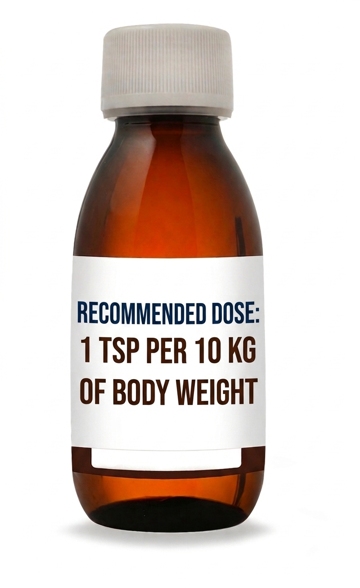
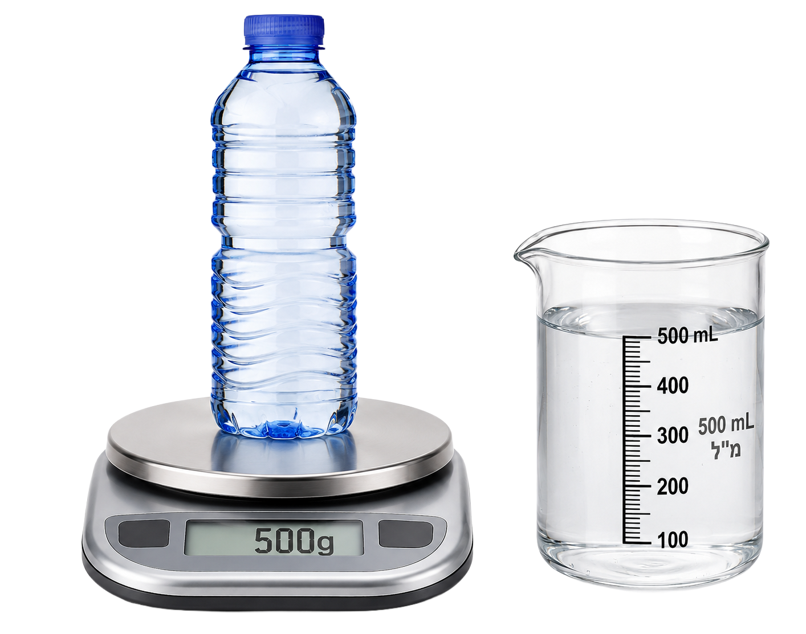

(هذا يعني أننا تقدّمنا في المستوى)

دواء للطفل
يظهر أمامكم دواء أمريكي مع تعليمات باللغة الإنجليزية على الملصق.
معنى الملصق بالعربية: الجرعة الموصى بها - ملعقة صغيرة واحدة لكل 10 كغم من وزن الجسم
قاموس المصطلحات:
Dose: الجرعة/المقدار
TSP (teaspoon): ملعق صغيرة (5 ملل في القياس الطبّي)
Body Weight: وزن الجسم
وزن علاء 30 كغم. على كم ملل سيحصل؟

ما هي كمية الماء؟
قاس سامر الكتلة الصافية للماء في القنينة، ووجد أن كتلته 500 غرام.
قاست سوسن حجم الماء في نفس القنينة ووجدت أنه 500 ملل.
ادّعى كلاهما: "لدي قنينة تحتوي على نصف لتر من الماء".
معلوم: 1 غرام ماء = 1 ملل الماء.
مَن مِنهم على صواب – سوسن أم سامر؟
فيديو قصير عن ملعقة تنقذ حياة